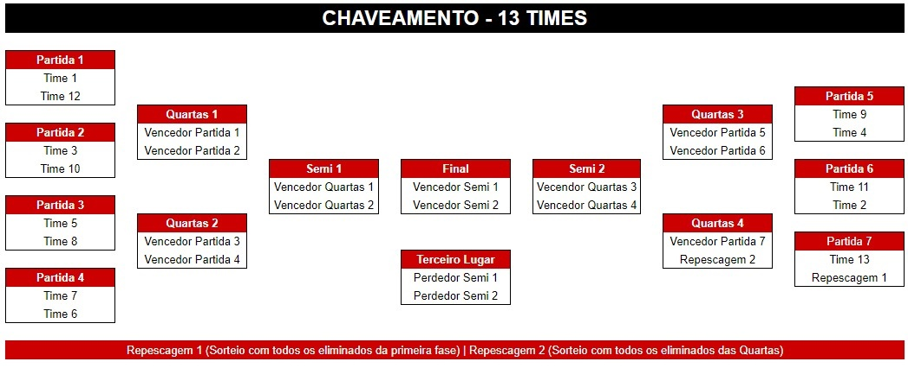
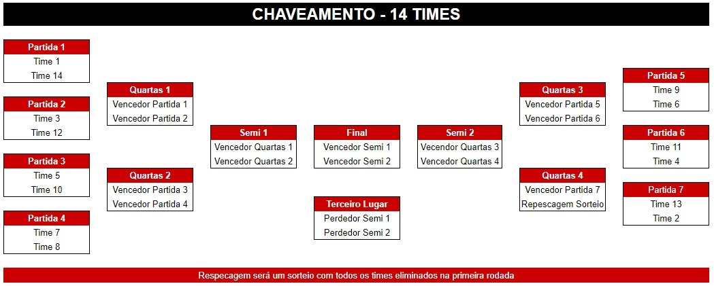
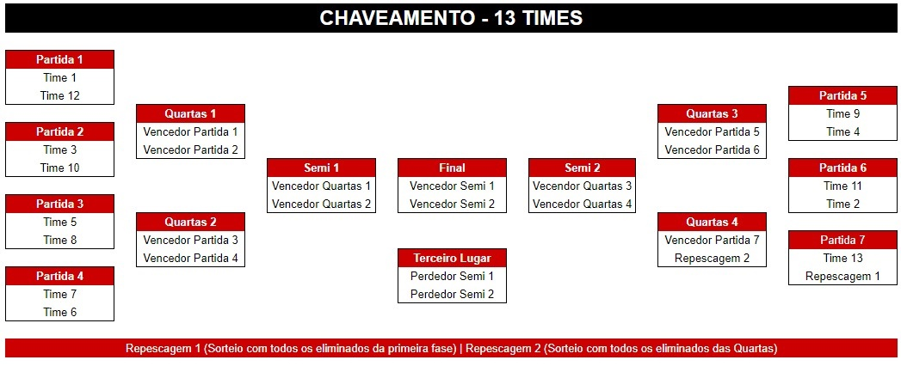
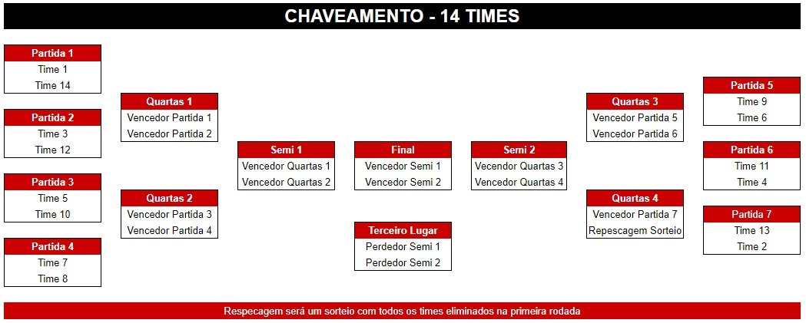
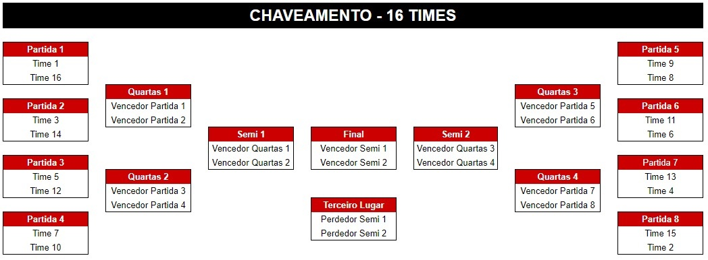
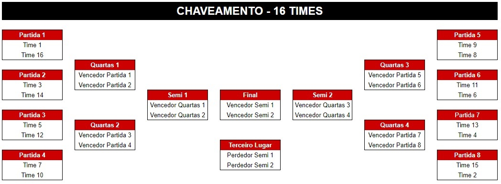

Regras Clash Royale para o 1° Campeonato Pyladies de E-Sports
1- Regras Gerais
1.1- Além das regras citadas abaixo, todos e quaisquer participante concorda com as regras gerais dadas pelo 1° Campeonato Pyladies de E-Sports. Ao solicitar a entrada em Brawl Stars, você declara e garante aos organizadores do 1° Campeonato Pyladies de E-Sports que leu, entendeu e concorda com essas regras e estipulações e promete agir em conformidade com essas regras e estipulações o tempo todo.
2- INSCRIÇÃO
Art 1. Cada equipe será constituída por 2 players, ou seja, uma dupla.
Art 2. No ato da inscrição deverá ser informado os nomes e nicks dos players, além de um telefone do player responsável (líder) para ser adicionado no grupo do WhatsApp da organização do campeonato.
Art 3. Cada dupla tem direito a inscrever 1 player reserva.
Art 4. O nick inscrito deverá ser o utilizado na partida.
3- ORGANIZAÇÃO E COMUNICAÇÃO
Art 1. Será criado um grupo no WhatsApp para que os jogadores entrem, nomeado de Clash Royale - CPES. Nesse grupo serão passadas todas as informações à respeito do campeonato. É de extrema importância que ao menos um membro da dupla esteja no grupo, o convite para acessá-lo será dado por meio do telefone de contato cadastrado.
Art 2. Todas as informações à respeito das partidas seguirão um padrão. Os responsáveis de cada dupla serão marcados, devem informar as cartas banidas e, à partir de então devem se organizar para começar as partidas.
Art 3. Todos os times inscritos receberão uma numeração que será sorteada, para montagem do chaveamento (conforme a tabela na seção de “CLASSIFICAÇÃO”) e identificação de adversários.
Art 4. Qualquer dúvida relacionada ao evento, deverá ser comunicada no grupo do WhatsApp, marcando o(s) administrador(es) do grupo. Mensagens privadas não serão respondidas.
Art 5. Será criado um clã para que os jogadores entrem, nomeado de Camp PyLadies.
Art 6. Todos os players deverão permanecer no clã até serem eliminados ou até o término do campeonato.
Art 7. Os jogadores devem respeitar as partidas, não entrando naquelas que não foram convocados. Sujeito a punição a equipe.
Art 8. As informações passadas no grupo do WhatsApp podem ser reenviadas no clã do evento. Todavia o grupo do WhatsApp é a principal plataforma para comunicação.
Art 9. É de extrema importância que os membros respeitem o grupo e o clã, não floodando mensagens. Sujeito a punições.
Art 10. Os membros das duplas deverão estar no clã no mínimo 5 minutos antes de iniciar os confrontos. Sujeito a punição.
Art 11. Ao menos 1 player de cada dupla deverá estar no grupo do WhatsApp no mínimo 15 minutos antes de iniciar os confrontos, para que receba as instruções.
Art 12. O link do clã será compartilhado no grupo do WhatsApp.
Art 13. O campeonato terá seu sistema de chaveamento definido com base na quantidade de duplas participantes, a princípio serão 16 vagas (alguns exemplos de chaveamento com base na quantidade de participantes podem ser observadas na seção “CLASSIFICAÇÕES”), caso esse valor seja menor, será remodelado o sistema de classificação.
4- PARTIDAS
Art 1. As partidas serão realizadas no modo padrão.
Art 2. Todas as batalhas serão amistosas, para que as cartas e as torre do rei se igualem em nível de torneio (Level 9).
Art 3. Cada jogador tem direito a banir uma carta de feitiço e uma de construção antes de cada confronto 1x1. As cartas que serão banidas devem ser informadas no grupo de comunicação e organização do WhatsApp.
Art 4. Cada dupla tem direito a banir uma carta de feitiço e uma de construção antes de cada confronto 2x2. As cartas que serão banidas devem ser informadas no grupo de comunicação e organização do WhatsApp.
Art 5. As duplas devem verificar se o adversário utilizou carta banida. Caso ocorra, a dupla que utilizou carta banida será considerado derrotada por W.O. naquela partida.
Art 6. Caso o jogador não tenha percebido quais foram as cartas banidas e entrou na partida, ele poderá continuar jogando sem punições, contanto que não utilize ela(s), caso seja utilizado perderá por W.O.
Art 7. Cada dupla jogará uma MD3 (melhor de 3) contra o adversário, distribuído em, uma MD1 em dupla, e duas MD1 com cada player enfrentando o player adversário (Player A e B 2x2 Player A e B, Player A 1x1 Player A, Player B 1x1 Player B).
Art 8. Os jogadores do chaveamento ímpar deverão iniciar a busca da partida. Caso ambos os players entrem em consenso qualquer poderá iniciar.
Art 9. Os jogadores terão até 3 minutos para iniciar a partida assim que for liberado o confronto.
Art 10. O player reserva só poderá jogar caso algum titular não possa no dia, ou algum dos titulares não esteja de acordo com as regras.
Art 11. Não será permitido a substituição caso o dupla titular esteja presente e de acordo com todas as regras.
Art 12. As partidas serão realizadas uma após a outra. Logo os players devem se atentar quanto ao chaveamento para estarem prontos na hora do seu confronto. Não será estipulado tempo para cada partida, necessário atenção dos players.
Art 13. As partidas serão válidas à partir do momento em que um administrador disser que podem começar. O(s) administrador(es) do grupo informará que está válido o início do confronto, em seguida o Líder ou Colíder do clã informará o mesmo.
Art 14. Qualquer partida realizada sem o aval do administrador não será considerada. Caso ambos os jogadores realizem a partida, em seguida não queiram jogar quando for validado, será considerado duplo W.O.
Art 15. Caso o jogador seja desconectado antes dos 30 segundos do início do confronto, a partida será reiniciada. Será necessário algum tipo de comprovação, como um print indicando a queda, por exemplo.
Art 16. Caso o jogador seja desconectado depois dos 30 segundos do confronto ter iniciado, o jogador adversário terá a escolha de reiniciar ou não o confronto. Será necessário algum tipo de comprovação, como um print indicando a queda, por exemplo.
5- PUNIÇÕES
Art 1. A dupla que não estiver no clã até 15:55 hrs, receberá a punição de uma derrota e a dupla adversária escolherá se jogará duas partidas 1x1 ou uma partida 1x1 e uma 2x2.
Art 2. A dupla que não tiver nenhum membro no grupo do WhatsApp até 15:45 hrs, sofrerá a punição de uma derrota e a dupla adversária escolherá se jogará duas partidas 1x1 ou uma partida 1x1 e uma 2x2.
Art 3. Qualquer ato considerado imoral será punido com a eliminação da equipe do campeonato. Inclui-se, acusações, homofobia, racismo, xenofobia entre outros.
Art 4. Jogadores que não estão com o nick que foi inscrito não poderão jogar, haverá um prazo de 2 minutos para troca do nick atual pelo que foi inscrito, ou para chamar o player reserva. Caso ambos não sejam respeitados a dupla estará eliminada.
Art 5. Qualquer membro da dupla que floodar mensagens desnecessárias no clã ou no grupo do WhatsApp, serão punidos com uma derrota por W.O.
Art 6. Qualquer ato de desrespeito com o(s) administrador(es) do clã e/ou grupo poderá ser punido com uma derrota ou eliminação da equipe.
Art 7. Utilização de cartas banidas (vide Art 5. e Art. 6 da Seção Partidas) na arena resultará em W.O. naquela partida.
Art 8. Qualquer jogador que se sinta desrespeitado por outro jogador deve contatar no grupo do WhatsApp para ser apurado. Caso identificado algum ato de desrespeito a dupla do infrator será eliminada. Provas como prints poderão agilizar no processo de verificação.
Art 9. Qualquer evidência de utilização de cheats, resultará na punição sem aviso prévio da dupla.
6- CLASSIFICAÇÕES
Art 1. O time classificado deverá aguardar o término dos confrontos da fase atual, para iniciar as partidas da fase a seguir.
Art 2. Ao final de cada partida os administradores anotarão o vencedor do confronto.
Art 3. Caso ocorra uma quantidade menor que 16 duplas, os confrontos eliminatórios ficaram distribuídos da seguinte forma, podendo alterar de acordo com a quantidade de equipes:
 



 
